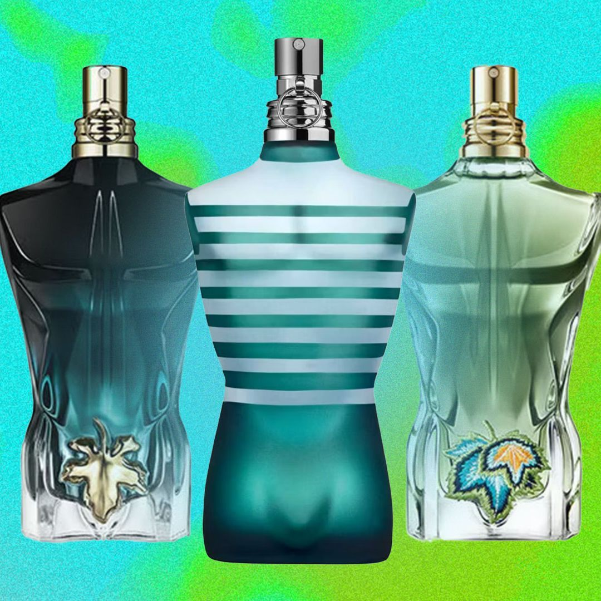

Gaultier's designs are known for challenging traditional gender norms and embracing diversity. He introduced elements like the men's skirt and unisex wardrobes, and his collections often feature bold, unconventional materials and silhouettes.In 2003, Gaultier became the creative director of Hermès, a position he held until 2010. Despite his retirement from ready-to-wear fashion in 2020, he continues to influence the industry through haute couture and collaborations with other designers. Gaultier's work includes memorable designs for pop culture figures, such as Madonna's cone bra and costumes for the film The Fifth Element. His fragrance line, particularly the "Le Male" and "Classique" perfumes, is also highly acclaimed.
